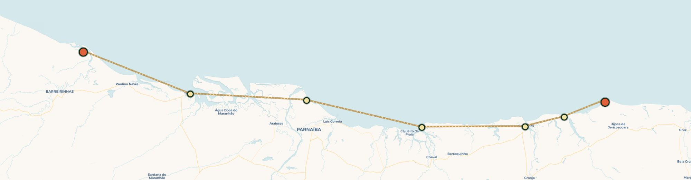
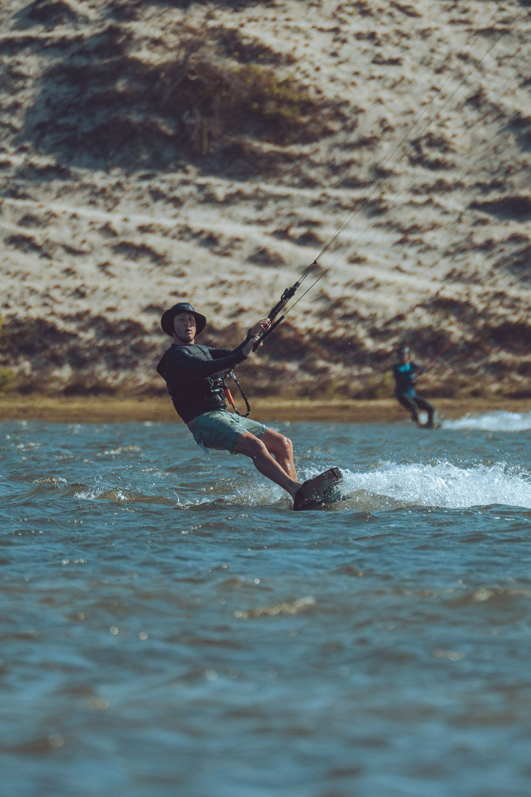
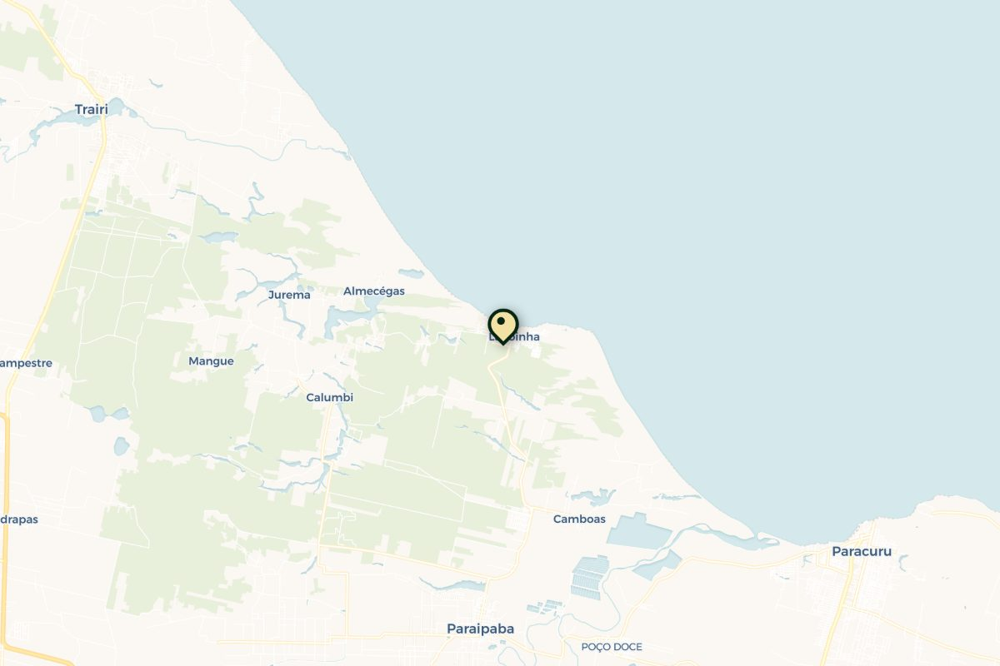
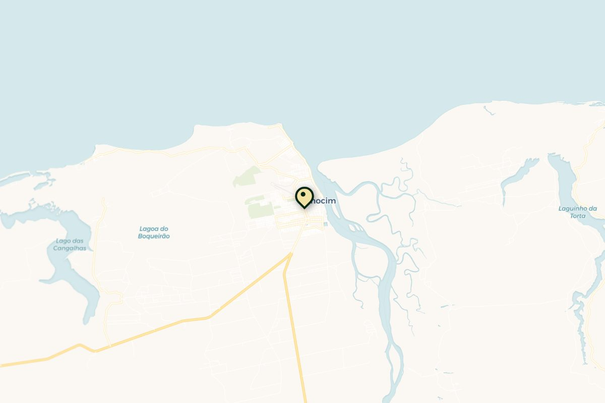
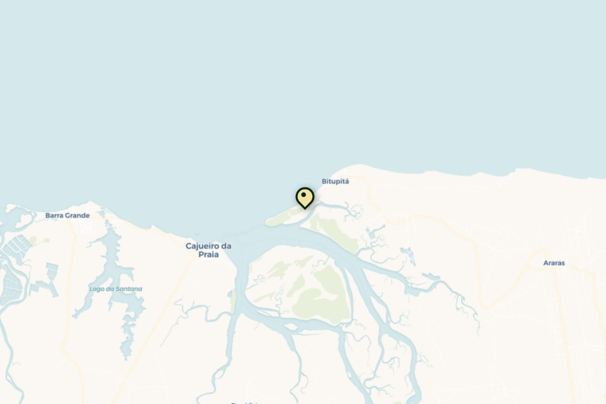
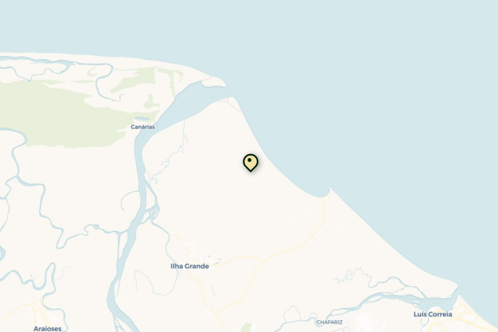
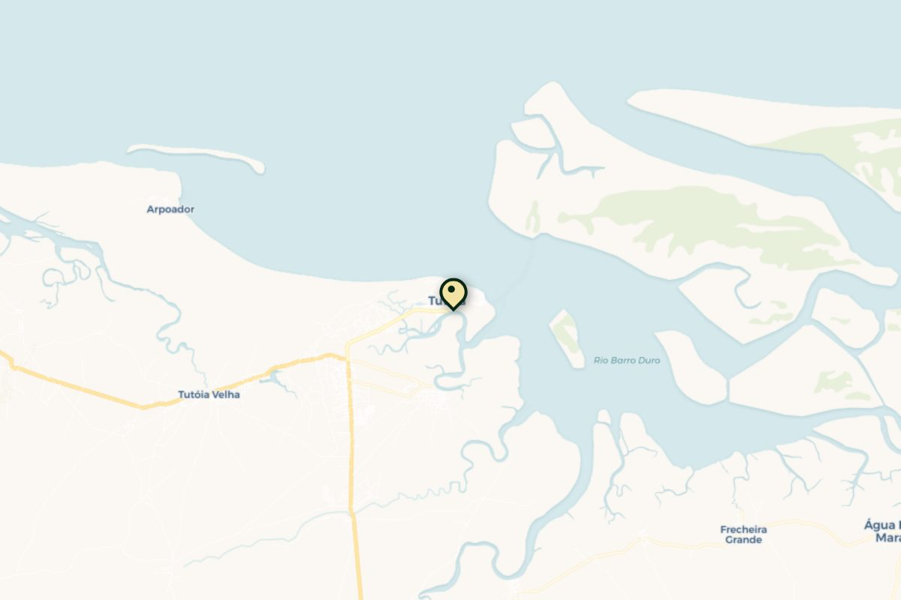
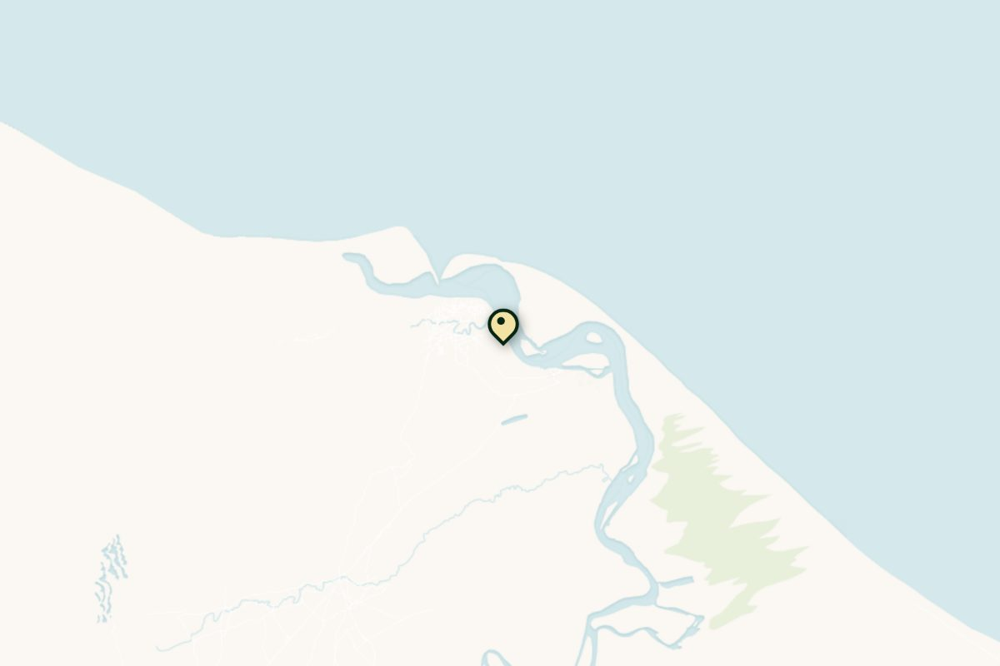

Cumbuco
Start & thuisbasis — inkiten bij Windtown.
9 — 18 OKTOBER 2026 · CEARÁ, BRAZILIË
We kennen deze kust: vijf spots, non-stop thermische wind en dé klassieke downwinder van Ceará. Dit keer pakken we ’m helemaal.
PROLOOG · CEARÁ
Ceará is bijna een jaarlijkse gewoonte: elke ochtend wakker worden met wind die er gewoon is. Sessies tot het donker werd, caipirinha's in het zand, spierpijn die je graag terugneemt. Dit zijn de beelden — en dit is precies waarom we teruggaan. Alleen dit keer verder en wilder, met z'n drieën.
Klik op een foto om 'm groot te bekijken. Onze eigen beelden — Donkey Lagoon, november 2024.
HET PLAN · OKTOBER 2026
Ceará is de meest betrouwbare kitecoast van Brazilië: van juli t/m december waait de thermische wind vrijwel elke dag 20–30 knopen, van vroeg in de ochtend tot laat in de middag. Met z'n drieën volgen we de kust van oost naar west — vijf spots, elk met een ander karakter: een thuisbasis om in te vliegen, rustige lagunes, een ongetij-spot voor flat water, de duinen van Jeri en de wildernis van Tatajuba als grand finale.
Dit voorstel bevat een dagplanning, twee complete accommodatie-opties (A — Kite Comfort en B — Backpacker Budget) en een budgetoverzicht. Alles binnen max. €50 pp per nacht. Cumbuco ligt vast: we zitten bij Windtown.

DE ROUTE · OOST → WEST

Start & thuisbasis — inkiten bij Windtown.
Onze thuisbasis: Donkey Lagoon, kniediep flat.
Ongetij-spot, spiegelglad flat water.
De duinen, het dorp, de sunset.
De wilde finale over de lagune.
DAGPLANNING optie 1 & 2
Tatajuba is lastig bereikbaar over de weg (4x4/zandpad) — de gebruikelijke manier is downwind vanaf Jeri over de lagune. Wil de groep er een nacht blijven? Zie de optionele extra nacht bij Opties A/B hieronder.
DRIE ROUTES · STEM MEE
Drie concrete voorstellen — van vertrouwd tot avontuurlijk. Vergelijk ze hieronder, vul je naam in en stem: de telling is live en gedeeld, dus we zien met z'n drieën meteen waar de meeste stemmen naartoe gaan.
| Optie 1De Klassieke Kust | Optie 2Jeri Focus | Optie 3Safari Jeri → Atins | |
|---|---|---|---|
| Route | Cumbuco → Tatajuba | Cumbuco + lang Jeri | Jeri → Atins |
| Spots | 5 (bekend) | 3 (focus) | 7 (nieuw) |
| Duur | 9 nachten | 9 nachten | 7 kite-dagen |
| Afstand | ± 275 km | beperkt | ± 275 km |
| Niveau | Alle niveaus | Alle niveaus | Gevorderd |
| Water | Flat + zee | Flat + duinen | Lagunes + delta |
| Reizen | Om de paar dagen | Nauwelijks | Elke dag verder |
| Vluchten | Fortaleza retour | Fortaleza retour | In Fortaleza/Jeri · uit São Luís |
| Sfeer | Vertrouwd & compleet | Relaxed | Avontuur & wildernis |
Optie 1
Onze bekende route: van oost naar west langs vijf spots, elke paar dagen een nieuwe plek. Comfortabel thuisbasis-hoppen met vaste pousada's en korte downwind-etappes ertussen.
Cumbuco → Lagoinha → Guajiru → Jericoacoara → Tatajuba
Optie 2
Minder koffers sjouwen, meer sessies. Inkiten in Cumbuco, flat water op Guajiru, en dan lekker lang in Jericoacoara blijven hangen — dagtrips naar Tatajuba en de lagunes vanuit één basis.
Cumbuco → Guajiru → Jericoacoara (lang) → Cumbuco

Optie 3 · NieuwVlieg direct naar Jericoacoara en ga met de wind mee helemaal westwaarts naar Atins. Een echte downwind-expeditie door drie staten — Ceará, Piauí en Maranhão — langs plekken waar we nog nooit waren, met 4x4- en bootsupport waar de kust ophoudt.
Jeri → Tatajuba → Camocim → Barra Grande → Parnaíba-delta → Tutóia → Atins
Vul je naam in en breng je stem uit.
DE SPOTS · OOST → WEST optie 1 & 2
De vijf spots van de klassieke kust (optie 1 & 2), van oost naar west. Gaan we voor de safari (optie 3)? Scroll dan door naar Jeri → Atins hieronder.
Dichtst bij Fortaleza (±40 min) en daardoor de lichtste wind van de trip — fijn om in te komen. De zee is choppy, maar de Cauípe-lagune om de hoek is butter-flat: niet voor niets waar de pro’s trainen. Levendig dorp met kitescholen, verhuur en bars.


📍 Lagoinha ↗Rustig duindorp tussen Paracuru en Guajiru, ±1u30 van Fortaleza, bekend om z'n rode duinen. Hier ligt Donkey Lagoon (Lagoa dos Jegues), ±3 km downwind: een getij-onafhankelijke lagune die maar kniediep is en spiegelglad — dé plek waar we vorig jaar de meeste sessies maakten. Perfect om te leren én om freestyle te oefenen. De wind waait van eind juli tot december vrijwel dagelijks side-on.
3u van Fortaleza, inmiddels een echt kite-dorp. Brede, ondiepe lagune — staan-diep en overwegend vlak (wel wat tij-afhankelijk, schelpen bij laag water). Populair, dus het kan druk zijn met scholen, en bovenin de lagune staat de wind soms vlagerig.
5u van Fortaleza en het bekendste dorp van de kust. De sterkste en langste windperiode van de reis (door tot jan/feb) — vaak te hard om te leren. Golven op zee, flat water bij Guriú en Preá. Het dorp is de reden dat iedereen terugkomt: eten, bars, capoeira in het zand.
5,5u van Fortaleza, voorbij Jeri: heel rustig, een handvol pousadas. Een grote lagune (tij-afhankelijk) plus altijd golven op zee. De klassieke manier om er te komen is de downwind vanaf Jeri — verder is het 4x4-terrein over de duinen.
OPTIE 3 · DE SAFARI alleen bij optie 3
Kies je voor optie 3, dan slaan we de terugreis over en gaan we juist verder westwaarts — een echte downwind-expeditie van Jericoacoara helemaal naar Atins, de poort van Lençóis Maranhenses. Zeven kite-dagen, drie staten, elke dag een nieuwe lagune. Dit is nieuw terrein voor ons; hieronder wat je op elke stop kunt verwachten (wind, water en niveau op basis van de operators die deze safari rijden).
Vliegen naar Jeri (klein vliegveld op ±35 min) i.p.v. Fortaleza. Inkiten op de betrouwbare 20–30 kn, laatste comfort vóór de wildernis. Zie ook spot 04 hierboven.
Eerste etappe met de wind mee. Bij hoog tij vult de lagune achter de duinen zich tot een enorme, ondiepe flatwater-vlakte; de wind loopt hier vaak boven de 30 kn. Verlaten, ruig, prachtig.

📍 Camocim ↗Havenstadje aan de riviermonding en de laatste stop in Ceará. De downwind ernaartoe gaat over kilometers verlaten strand; aankomen doe je in de brede riviermonding met flat water. Vers gevangen krab bij de barracas als beloning.

📍 Barra Grande ↗Het kitedorp van Piauí, waar velen 2 nachten blijven. Kite zó van je terras: flat water vóór het dorp bij laag tij, plus de La Boca-lagune ±2 km downwind, verstopt in de mangroven — 1,4 m diep, spiegelglad, perfect voor freestyle. Sterke sunset-sessies.

📍 Parnaíba-delta ↗De op twee na grootste rivierdelta ter wereld en de enige in open zee van Amerika: een doolhof van eilanden, mangroven en zandbanken. Kiten tussen de kanalen met bootsupport, overnachten op een van de delta-eilanden. Puur avontuur, ver van alles.

📍 Tutóia ↗Aankomst in Maranhão. Beschutte baai met flat water en de laatste bewoonde stop vóór het laatste, meest afgelegen stuk richting Caburé en Atins. Hier ruik je de Lençóis al.

📍 Atins ↗De grande finale, aan de monding van de Preguiças-rivier en de rand van Nationaal Park Lençóis Maranhenses. Enorme flatwater-vlaktes (27 °C water), wind van juli–december met de piek in okt–nov, en downwinds naar Caburé en Mandacaru. Afsluiten tussen de witte duinen en zoetwatermeren — een van de mooiste plekken op aarde om te kiten.
De safari rijd je met een lokale guide + 4x4/boot-support (tassen gaan vooruit). Aankomst in Atins betekent uitvliegen via São Luís in plaats van Fortaleza — iets duurder qua binnenlandse vlucht, maar je eindigt middenin de Lençóis. Precieze etappe-lengtes hangen af van wind en tij; dit schema volgt de gangbare 7-daagse safari.
DE DOWNWINDER optie 1 & 2
Dit is de klassieke downwind-lijn die kitesafari-operators als Downwind Kite Safari en Lov2Kite al jaren rijden: van Cumbuco naar Jeri, elke dag een etappe met de wind mee terwijl de auto de tassen vooruit rijdt. Standaard-etappes zijn 28–40 km; wie fit is rijgt ze aan elkaar tot dagen van 50–70 km. De wind pakt meestal rond 11–12 uur op en piekt in de middag.
Zachte opener: ondiep flat bij Cumbuco, glasheldere golfjes bij Taíba, aankomst bij de rode duinen en Donkey Lagoon van Lagoinha.
±28 km · 2,5–3,5 uurLangs palmstranden, met een flat freestyle-stop op Donkey Lagoon, door naar het kite-dorp Guajiru.
±32 km · 3–4 uurKleine schone golfjes én veel flat water, langs het rustige Icaraizinho richting Preá — de langste dag van de reis.
±36–56 km · 4–5 uurVoorbij Preá 8 km perfecte golven, spiegelglad bij Guriú, onder de duin van Jeri door en eindigen in de wildernis van Tatajuba.
±38 km · 3–4 uurGeen beginnersfeest: je moet vlot kunnen relaunchen, in golven varen en 3–4 uur op het water staan (zo omschrijven de operators het ook). De 4x4 rijdt áltijd mee — wie stukgaat stapt in, wie vliegt vaart door. Samen ±150 km downwind, meer als je de dagen verlengt.
ACCOMMODATIES optie 1 & 2
Cumbuco ligt vast (Windtown) in beide opties. Voor de overige stops hebben we per optie een passende accommodatie uitgezocht, allemaal binnen budget. Klik op een kaart voor foto's, prijsindicatie en een link naar de aanbieder.
 vast
vastKitehuis met eigen school, zwembad, 2 min van de kite-spot.
± €38 pp / nacht
Beachfront kite-guesthouse, insider-tip onder kiters. Ontbijt inbegrepen.
± €30 pp / nacht
5 meter van zee, direct op de ongetij-spot, uitstekend ontbijt.
± €42 pp / nacht
Eigen badkamer + balkon, 400 m van het strand, ontbijt inbegrepen.
± €35 pp / nacht optioneel +1 nacht
optioneel +1 nachtBungalows direct op het strand, airco, klamboe, hangmat.
± €40 pp / nachtvastKitehuis met eigen school, zwembad, 2 min van de kite-spot.
± €38 pp / nacht
Simpel kite-house met airco, wifi en gratis parkeren. Budgetvriendelijk.
± €18 pp / nacht
Eco-pousada met Sahara-tenten, zonne-/windenergie. Bijzonder & budgetvriendelijk.
± €26 pp / nacht
Zelfde pousada, eenvoudigere kamer. 400 m van het strand.
± €18 pp / nacht optioneel +1 nacht
optioneel +1 nacht8 min lopen van het strand, tuin met zonnedek. Budgetvriendelijk.
± €20 pp / nachtElke knop opent de actuele beschikbaarheid met onze data al ingevuld: 3 personen, 1 kamer, gefilterd tot ±€150 per nacht totaal (≈ €50 pp) en gesorteerd op prijs. Hostels tellen gewoon mee.
BUDGET optie 1 & 2
| Cumbuco | 3 n × €38 | €114 |
| Lagoinha | 2 n × €30 | €60 |
| Ilha do Guajiru | 2 n × €42 | €84 |
| Jericoacoara | 2 n × €35 | €70 |
| Totaal (9 n) | ≈ €36 / nacht | €328 |
| + Tatajuba (optioneel) | 1 n × €40 | €40 |
| Cumbuco | 3 n × €38 | €114 |
| Lagoinha | 2 n × €18 | €36 |
| Ilha do Guajiru | 2 n × €26 | €52 |
| Jericoacoara | 2 n × €18 | €36 |
| Totaal (9 n) | ≈ €26 / nacht | €238 |
| + Tatajuba (optioneel) | 1 n × €20 | €20 |
Prijzen zijn indicaties op basis van recent gepubliceerde tarieven (deelbaar met 3 personen per kamer/room) en kunnen wijzigen met seizoen en beschikbaarheid. Bevestig altijd de actuele prijs bij de aanbieder vóórdat we boeken. Excl. vluchten, transfers, eten en verzekering.
VLUCHTSCHEMA optie 1 & 2 · safari uit São Luís
Er vliegt momenteel niets rechtstreeks van Amsterdam naar Fortaleza — één overstap is de norm. Dit zijn de drie logische routes; prijzen zijn indicaties voor oktober (retour, excl. sportbagage) en veranderen dagelijks.
AMS → Lissabon → Fortaleza
AMS → Parijs CDG → Fortaleza
AMS → Madrid → Fortaleza
Tip: boardbag inchecken als sportbagage kost bij TAP/AF-KLM ±€75–150 per richting — samen één quiver delen scheelt flink.
DUS…
Tien dagen wind, drie boards, één busje met tassen en elke avond een ander dorp. Dit is 'm — de trip waar we het in 2024 al over hadden. Zo maken we 'm definitief: